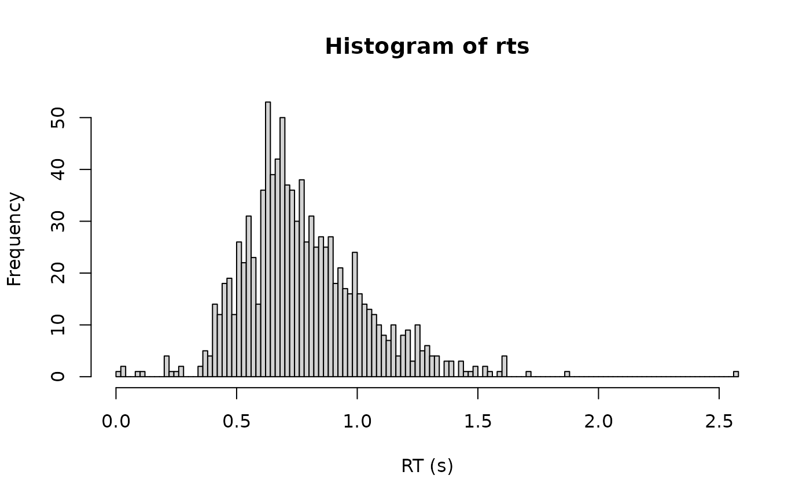

Density, random generation, and brms custom family for the shifted
Log-Gamma distribution. A Log-Gamma-distributed decision time is shifted by a
non-decision time ndt, and a fixed proportion poutlier of responses is
generated by an outlier process instead of by the decision process, exactly
as in cogmod_lognormal().
Functions:
rcogmod_loggamma(): Simulates random draws from the shifted Log-Gamma model.dcogmod_loggamma(): Computes the density (likelihood).cogmod_loggamma(): Creates abrms::custom_family()for use inbrmsmodels.cogmod_loggamma_stanvars(): Generates thestanvarsto pass tobrm().
Usage
rcogmod_loggamma(n, mu = -0.7, sigma = 0.5, shape = 0, ndt = 0.2, poutlier = 0)
dcogmod_loggamma(
x,
mu = -0.7,
sigma = 0.5,
shape = 0,
ndt = 0.2,
poutlier = 0,
log = FALSE
)
cogmod_loggamma(
link_mu = "identity",
link_sigma = "softplus",
link_shape = "identity",
link_ndt = "log",
link_poutlier = "logit",
predict_outliers = FALSE
)
cogmod_loggamma_lpdf_expose()
cogmod_loggamma_stanvars()
log_lik_cogmod_loggamma(i, prep)
posterior_predict_cogmod_loggamma(i, prep, predict_outliers = NULL, ...)
posterior_epred_cogmod_loggamma(prep, predict_outliers = NULL)Arguments
- n
Number of observations. If
length(n) > 1, the length is taken to be the number required.- mu
Location of the decision time on the log scale. Can take any real value. Range: (-Inf, Inf).
- sigma
Scale of the decision time on the log scale. Must be positive. Range: (0, Inf).
- shape
Shape (skewness) of the log-gamma on the log-RT scale. Unconstrained:
shape = 0is the LogNormal,shape = sigmathe Gamma,shape = 1the Weibull. See Details for thesigma * shape >= 1boundary. Range: (-Inf, Inf).- ndt
Non-decision time (shift parameter), in seconds. Must be non-negative. Represents time for processes such as stimulus encoding and response execution. Range: [0, Inf).
- poutlier
Proportion of responses generated by the outlier process rather than by the decision process. Range:
[0, 1]. Atpoutlier = 0the distribution reduces to the plain shifted LogNormal.- x
Vector of quantiles (observed reaction times).
- log
Logical; if TRUE, probabilities p are given as log(p).
- link_mu, link_sigma, link_shape, link_ndt, link_poutlier
Link functions for the parameters.
shapeis unconstrained and takes anidentitylink, so that the LogNormal (shape = 0) sits in the interior of its range rather than at a boundary.- predict_outliers
Logical; whether
posterior_predict()andposterior_epred()should include the outlier component.FALSE(the default incogmod_loggamma()) fixespoutlierto zero for prediction, so predictions describe the decision process alone; the likelihood is always the full mixture either way. On the prediction methods themselves the default isNULL, which defers to the flag carried on the model - seewith_outliers()to change it after fitting.- i, prep
For brms' functions to run: index of the observation and a
brmspreparation object.- ...
Additional arguments.
Value
rcogmod_loggamma() returns a numeric vector of n simulated
reaction times, in seconds. dcogmod_loggamma() returns the density at
each element of x - the log density if log = TRUE - recycled to the
length of the longest argument. cogmod_loggamma() returns a
brms::custom_family object, to put on a brms::bf() formula.
cogmod_loggamma_stanvars() returns a brms::stanvars object holding
the family's Stan functions block, to pass to brms::brm(), and
cogmod_loggamma_lpdf_expose() compiles that Stan code and returns it as
an R function, for checking the density outside of a model. The remaining
functions are brms post-processing methods, called by brms rather
than directly: log_lik_cogmod_loggamma() returns a numeric vector
holding one log-likelihood value per posterior draw for observation i,
and posterior_predict_cogmod_loggamma() a draws x 1 matrix of reaction
times simulated for observation i. posterior_epred_cogmod_loggamma()
returns a draws x observations matrix of expected reaction times.
What "Log-Gamma" means here
The log-gamma distribution is the distribution of log(G) for a Gamma
variate G. Used as the distribution of the log decision time - in the same
way the Normal is used in the shifted LogNormal - it gives a location-scale
family on the log scale with one extra shape parameter:
Equivalently, RT - ndt follows a generalized gamma distribution
(Stacy, 1962) in the parameterization of Prentice (1974), i.e.
flexsurv::dgengamma(mu, sigma, Q = shape). The two names describe the same
model: "log-gamma" names the distribution of log(RT - ndt), "generalized
gamma" names the distribution of RT - ndt itself.
A two-parameter log-gamma is not a usable RT model, which is why there is
a third parameter here. Exponentiating a plain two-parameter Gamma variate
gives support on (1, Inf), so decision times would be forced above one
second; adding a scale to fix that produces a second shift, perfectly
confounded with ndt; and letting log(RT - ndt) be log-gamma with no
location or scale just gives back the Gamma. Only the three-parameter
location-scale-shape version is both non-degenerate and closed under a change
of time unit (mu -> mu + log(c)), which everything else here relies on.
Relation to other "log-gamma" implementations
The name is used for two different distributions, and only one of them is this one.
scipy.stats.loggamma is the same distribution. It is log(G) for
G ~ Gamma(c), with the usual loc and scale, so it is a three-parameter
family exactly as this one is - c is the shape parameter, and it is not
optional there either. Taking scipy's variate to be log(RT - ndt), the
two line up exactly (verified to 3e-15):
Two deliberate differences. shape here is standardized so that the Normal
limit sits at shape = 0, an interior point; in scipy's parameterization
that limit is c -> Inf with loc and scale drifting off to compensate,
which is not something a sampler can explore. And because scipy requires
scale > 0, it covers only shape > 0; the shape < 0 half here - the
inverse-Weibull side, with the power-law right tail - is the reflection, and
would need -loggamma there.
actuar::dlgamma is a different distribution: exp(G) rather than
log(G), hence its support of (1, Inf). That is the version with only two
parameters, and the reason it needs only two is also the reason it is no use
for reaction times - see the paragraph above on why exponentiating a Gamma
does not give a usable RT model.
shape, and the families it nests
shape sets the skewness of the log-gamma on the log-RT scale; the Gamma it
is the log of has its own shape k = 1 / shape^2. Throughout the docs below,
"shape" unqualified means this parameter, never k.
It is unconstrained, with shape = 0 in the interior rather than at a
boundary, which is what makes it usable as a free parameter:
shape | Distribution | right tail |
< -1 | heavier still than the inverse Weibull | power law |
= -1 | inverse Weibull (Frechet) | power law |
-1 to 0 | between the LogNormal and the inverse Weibull | power law |
= 0 | LogNormal - exactly cogmod_lognormal() | lognormal |
0 to 1 | between the LogNormal and the Weibull; Gamma (shape 1 / sigma^2) at shape = sigma | lighter than lognormal |
= 1 | Weibull, shape 1 / sigma | lighter than lognormal |
> 1 | lighter still than the Weibull | lightest |
The right tail decays like exp(-c * t^(shape / sigma)) for shape > 0, so
it thins monotonically as shape rises, and becomes a power law for
shape < 0. shape therefore runs from heavy-tailed at the top of the table
to light-tailed at the bottom, through the LogNormal in the middle. The
Gamma sits inside 0 to 1 for any sigma < 1, which covers most RT data.
The model is therefore a strict generalisation of the shifted LogNormal, and
fitting it is a way of testing whether the LogNormal shape is adequate: an
interval for shape covering 0 says it is.
Where it misbehaves: sigma * shape >= 1
Just above the shift the decision density behaves like a Gamma whose own
shape parameter is 1 / (sigma * shape). When sigma * shape >= 1 that Gamma
shape falls below 1 and the
density becomes unbounded at ndt, so the likelihood can be driven up
without limit by pushing ndt toward the fastest response - the exact
pathology the outlier component exists to remove, reintroduced through the
shape parameter. The outlier component cannot repair it, because it adds
density rather than capping it.
This is the same degeneracy the shifted Gamma and shifted Weibull have when
their own shape falls below 1; it is inherited here, not introduced. In
practice the prior on
shape is what keeps you out of it: cogmod_priors() uses normal(0, 0.5) on
the intercept, which for a typical sigma around 0.5 leaves the boundary
at shape = 2, four prior SDs away. A posterior for shape pushing up against
1 / sigma is the model asking for a spike at the shift, not for a
decision-time distribution.
Negative shape has the mirror-image caveat: the right tail is a power law, and
the mean of the decision component is finite only when sigma * abs(shape) < 1.
posterior_epred() returns Inf where it is not.
Fit with init = 0
The prior keeps the posterior clear of that boundary, but it does not
control where a chain starts. brms initialises on the unconstrained
scale from U(-2, 2), which for the default links puts shape in (-2, 2) and
sigma in (0.13, 2.13) - and about 15% of chains start with
sigma * shape >= 1. A chain starting inside the unbounded region falls into
the spike at ndt and does not come back out: it does not error, it simply
runs for as long as you let it while the others finish.
init = 0 removes the problem by construction, starting every chain at
shape = 0 - the LogNormal - with sigma * shape = 0:
f <- brms::bf(RT ~ 1, sigma ~ 1, shape ~ 1, ndt ~ 1, poutlier ~ 1,
family = cogmod_loggamma())
brms::brm(f, data = df,
prior = cogmod_priors(f, df),
stanvars = cogmod_stanvars(f),
init = 0)This is not a tuning suggestion to try if sampling looks bad; it is how the model should be fitted. The one visible symptom of getting it wrong is a chain that never finishes.
ndt and poutlier
Identical in meaning, parameterization and defaults to cogmod_lognormal() - see
its Details for the full account of why ndt is expressed directly in
seconds, what the half Normal outlier component is for, why its scale is a
constant rather than a dpar, and why predictions exclude the outlier
component by default. with_outliers(), without_outliers(), p_outlier()
and cogmod_priors() all work on this family too.
References
Stacy, E. W. (1962). A generalization of the gamma distribution. The Annals of Mathematical Statistics, 33(3), 1187-1192. doi:10.1214/aoms/1177704481
Prentice, R. L. (1974). A log gamma model and its maximum likelihood estimation. Biometrika, 61(3), 539-544. doi:10.1093/biomet/61.3.539
Examples
# shape = 0 is exactly the shifted LogNormal
dcogmod_loggamma(0.9, mu = -0.7, sigma = 0.5, shape = 0, ndt = 0.3)
#> [1] 1.237954
dcogmod_lognormal(0.9, mu = -0.7, sigma = 0.5, ndt = 0.3)
#> [1] 1.237954
# Simulate 1000 RTs with 2% outliers and a slightly Gamma-like shape
rts <- rcogmod_loggamma(1000,
mu = -0.7, sigma = 0.5, shape = 0.5, ndt = 0.3,
poutlier = 0.02
)
hist(rts, breaks = 100, xlab = "RT (s)")

# Responses faster than ndt keep positive density, as in cogmod_lognormal()
dcogmod_loggamma(0.1, ndt = 0.3, poutlier = 0.02)
#> [1] 0.07041307
dcogmod_loggamma(0.1, ndt = 0.3, poutlier = 0)
#> [1] 0
# shape = sigma is the shifted Gamma, with shape 1 / sigma^2
dcogmod_loggamma(0.9, mu = -0.7, sigma = 0.5, shape = 0.5, ndt = 0.3)
#> [1] 1.206755
stats::dgamma(0.6, shape = 4, scale = exp(-0.7) * 0.25)
#> [1] 1.206755